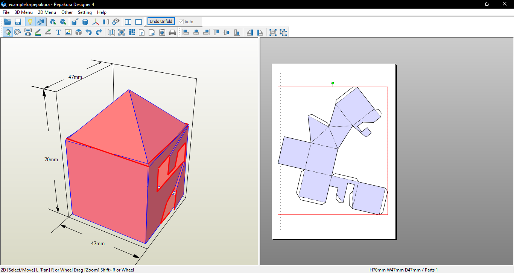

EXPORT AS PDF
Now that your template is unfolded, the next step is to prepare it for printing by exporting it as a PDF. Here’s how to do it:
- Adjust Your Template
- Move the template pieces around in the viewer until they fit onto one page. This helps save on printing and avoids complications when parts of your template span multiple pages. 
- Ensure all pieces stay within the page boundaries so nothing gets cut off when exporting to a PDF.
- Export as PDF
- Once you’re satisfied with how your template looks, go to File > Print to PDF.

That’s it! Your template is now ready to print and assemble.